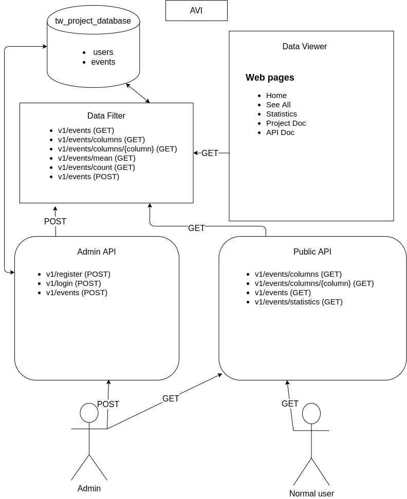

AVI project summary
1. Introduction
"Reducing traffic accidents is an important public safety challenge. However, the majority of studies on traffic accident analysis and prediction have used small-scale datasets with limited coverage, which limits their impact and applicability; and existing large-scale datasets are either private, old, or do not include important contextual information such as environmental stimuli (weather, points-of-interest, etc.). In order to help the research community address these shortcomings we have - through a comprehensive process of data collection, integration, and augmentation - created a large-scale publicly available database of accident information named US-Accidents.
US-Accidents currently contains data about 2.25 million instances of traffic accidents that took place within the contiguous United States, and over the last three years. Each accident record consists of a variety of intrinsic and contextual attributes such as location, time, natural language description, weather, period-of-day, and points-of-interest."
Reference: https://arxiv.org/abs/1906.05409
2. Architectural pattern
This application uses the MCV architectural style. It was chosen because the application contains both interaction with the database and with users. This way, it's easy to split the view components from the rest of the application. The application's functionalities different than working with the data base. As a result all these components can be implemented individually by different people.
The entire application is split in 4 components, which work individually as microservices
.Microservices allow the parallel development of all these components. Obscures the operations that are happening in the back-end, offering only the result. To use a microservices you don't need to know how it is implemented.
The communication between these microservices respects the REST architecture using the operations: GET and POST. All data returned by them are in JSON format. This format was chosen because nowadays it is becoming more and more popular in the detriment of XML.
3. Structure
3.1. Microservices
The application is structured in four microservices depending on the functionalities:
- Data filter
- Data viewer
- Public API
- Data Administration
3.1.1. Data filter
It is the only component which has access to the events table from the database. Because this table can be very large, operations must be optimized as much as possible. This component has the role of extracting accidents according to different filters. This filters are sent as parameter in a GET request and the response to the events is returned in JSON format.
3.1.2. Data viewer
This microservice deal with the aplication's/ web's site interface. The Data Viewer tab operates the extracted informations from the back-end section with the help of the data filter microservice, and it converts and shows the information in a more clearer and user-friendlier way to the front-end section.
The user can filter the data as he pleases so he can extract the informations that he wants, either as a chart taking the svg, png format, or the csv format, where he is presented with a document that contains the column he selected and the column's value. At the same time, he can see the informations regarding the accidents that happened and he can also see a map which displays(by color), the number of cases that happened in each state.
3.1.3. Public API
Public API component is handling of requests from external applications and provides access to the data in the database by returning it in a structured way in the form of JSON.
3.1.4. Data Administration
Data Administration component allows authorized users to add events to the database.
3.2. User interface
3.2.1. Interface components
The site's interface is divided in three main pages:
- Home
- See all
- Statistics
3.2.1.1.Home page
On the main page, the user can see a cartographical representation of the events that took place, each state is colored in a way that represents the high or low number of accidents, this number is extracted from the data base and inserted into a jason type file, and then, with the help of an API(leaflet), the map would be created. The higher the number of accidents, the darker the color used for the representation. There, we can also see the motivation behind the choosing of the theme and some other informations regarding the number of accidents which took place in the United States of America.
The back-end section shows a page which contains only one important compenent, that being the map controller, that handles the data management and the map's creation.
3.2.1.2.See all page
This page shows data regarding the accidents that took place, and that can be found in the database. The data containers can be sorted by the State's number ,by Date, "ascending" or "descending" and can be filtered by "City", "County" and the date at which the accident took place. For efficiency's sake, the page will load ten events simultaneously, at the end of the page, a pagination menu being displayed, so the user can choose to go to the next page or the previous one, that will let him see another display of 10 accidents.
3.2.1.3.Statistics page
The Statistics Page is divided by 2 major components: The first component contains the filer menu. The second component plays a key role after the completion of all the data is required to be filled by the user. After the data is being filled in, the second component begins to take charge, and converts the data and the filters selected to graphical representaions. The ease of use for the Filtering Menu is being made possible by the four sub-menus(CUstom filters, presence filters, data filters, and between filtes)
The first sub-menu, contains filters that use very few values like (day-night, left-right). For the sake of optimisation, we decided to structure them separately, the reason being that it would make no sense to interrogate the database with values for values that cannot be changed from the default ones.
The second sub-menu, contains boolean-type filters(true, false), that lets you choose wheter the accidents took place or not, and whether the idividuals involved in those accidents suffered injuries or not.
The third sub-menu, contains filters that depend exclusively on the database, like the name of the state, the cities, adresses.
The last sub-menu, contains numerical filters that can be set between the low and the high value for the respective filter. For example: the wind speed, temperature, latitude, longitude etc.
After the completion of these filters, the user must choose the type of the chart he wants to be used for the graphical representation(bar-plot, pie-chart, lollipo-chart) and the informations he wants to be added to that chart( these being validade by the front-end part, an error message being shown to the user if he did not complete those sections as intended and the submit button not being available to be selected).
The moment those filters have been filled in, a chart container will be displayed, containing the graphical representation of the chart, and a menu for the chart to be extracted with different extensions, such as png, svg, or csv. In the making of the graphics, the D3 libraby has been used. For vectorial format graphs, and for every type of graph, a csv document will be generated that contains the necessary data, and then the D3 library manipulates this data and creates the graph.
We chose this type of page representation because it is very intuitive and user-friendly, and at the same time, it allows coomplete freedom to the user, him being able to select whaever filter he desires. At the same time, all these sub-menus are closed in the beginning, this making the page not too overloaded. These will be shown and available to use, the moment the user chooses to do so(they are defaulted to "All")
The main classes used by the back-end section are ChartContainer and FilterContainer, the first class is used for statistics part, that helps for the creation of the container in which they will be put. The second one will create the containers for the filters, to each container belong a series of atributes like ID, Title, Type of Container(between, more Options, One option) and a list FilterContainerRow type objects that represents the values from that particular container. Depending on the tyoe of that container, the values can be numerical, check-boxes, radios, in the same order as the container we documented earlier on. Finally, the statistics controller handles the data manipulation, and later on the View tab will be included to the Statistics page.
3.2.2.Interface evolution
During the first weeks of our choosing of the project's theme, we met for us to try and draw a schematic of our aplication(the resources we would need, the visualisation of the pages we would have to create, and most importantly, how the user would interact with our final product. In the beginning, we were very optimistic that we wouuld create a very interesting platform, a social network of the sorts, that would let the users post accidents. These posts would be certified later by other users that know more informations about that specific accident. The post would be submited for review to the admin, and depending on the others users' feedback, the post would be granted approval, or deletion.
Some time after, we figured out that we cannot do so many things without losing some of the essentioal functionalities of the application. This way, we decided to focus more on the functionality part and do whats necessary. Later on we would discuss other functions we could implement, but in the period of time we were given.
These are some schematics of our aplication after the first meeting:
After the first meeting in which we decided how the filters menu would look like on the statistics page, in earlier stages, the menu was very minimalistic and had very few filters. After that, we came to the realisation that we should structure it by categories.
Down bellow there is an image with the way the filer menu looked like:
On the back-end side, as well as the structure, at first the site consisted of only a few html, css and js files, then we switched to MVC and introduced php so that in the end we could divide the application into microservices and we deal with the API part.
3.3. UML diagram
4. Used technologies
In carrying out the project we used the following technologies:
On the back-end we used php, MySQL, while on the front-end we used html, css and js.
PHP is a programming language used to create dynamic web pages or interactive web applications. PHP has become a very important language for open-source and server-side web programming.
MySQL is a database management system used very often together with PHP programming applications through which many web applications can be built and not only, but MySQL can be used together with almost any major language. It is produced by the Swedish company MySQL AB and is distributed under the GNU General Public License. This software works with the LAMP stack (Linux, Apache, MySQL, PHP). MySQL databases can be accessed and edited through C, C ++, C #, Perl, Java, Python, PHP, FreeBasic and many more programming language APIs.
HTML is a technology through which text documents, but also images, can be displayed on a single page through a specialized software called web browser. The text and information on a page can be arranged and annotated with various codes, metadata types, and playback directions.
CSS or Cascading Style Sheets is a standard that helps format an HTML document in a simpler and more creative way. A CSS file can be attached to an HTML file as an external file or even in the HTML document through an attribute. The way a site's content is displayed can be controlled via CSS. CSS also helps to format pages made in XHTML, XML or SVGL formats.
Javascript is a very popular programming language that is used in many web pages. Interactive functionality can be introduced in any site through Javascript code so that the site is more dynamic. Javascript code is run by the browser and can also give access to objects or programs from other applications.
5. Database
To store data was used MySQL, relational database management system, because it is suitable for large data and it is easy to do filtered queries according to many criteria.
MySQL ensures data security with exceptional data protection features. Powerful data encryption prevents unauthorized viewing of data and SSH and SSL supports ensure safer connections. It also features a powerful mechanism that restricts server access to authorized users and has the ability to block users even at the man-machine level. Finally, the data backup feature facilitates point-in-time recovery.
6. Team work
The team meetings in which we discussed who and what has to be implemented took place on discord, while the project was made using github for an easier management of the work (each one can work in parallel to his work, following at the end to merge files).
7. References
In carrying out the project we used the following resources:
- For the map we use the services of the leaflet api, and in making it we followed the tutorial on their page https://leafletjs.com/examples/choropleth/. This API is licensed BSD, to read more about it access the link here.
- To create the charts I used the D3.js library and I followed the tutorials on the page https://d3js.org/. This library has a BSD license, to read more about it, access the link here.
- For exporting charts in png format we use a script with MIT license taken from github https://github.com/bjpop/saveSvgAsPng.
- For the front-end part, we used the help of the site https://www.w3schools.com/.
- For questions about php I used the PHP manual, which you can see https://www.php.net/manual/ro/index.php.
- To read a json file in javascript I used a jquery script from the link https://stackoverflow.com/questions/20400076/reading-a-file-into-a-string-in-jquery-js.
- Data set for accidents was taken from https://www.kaggle.com/sobhanmoosavi/us-accidents.
- For UML diagram we used https://app.diagrams.net/
- As management system for the source code we used https://github.com/